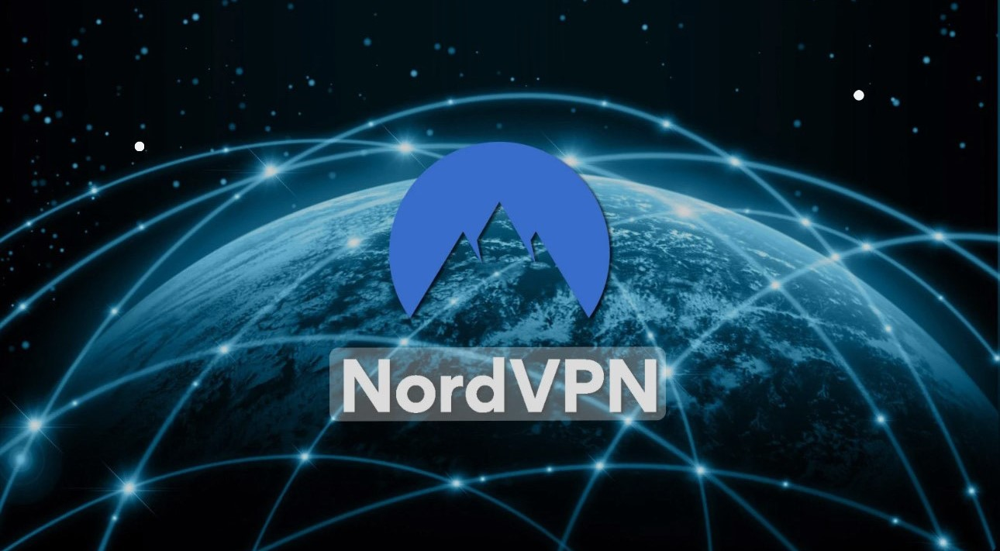

What is NordVPN?
Sign up today
NordVPN is a VPN service designed to provide users with a secure and private online experience. In essence, a VPN acts as a tunnel for your internet traffic, encrypting the data exchanged between your device and the internet. NordVPN's primary goal is to enhance user privacy, protect sensitive information, and offer a range of features that contribute to a safer and more open internet.
How does NordVPN work?
NordVPN works by establishing a secure connection between your device and one of its servers located around the world. This connection encrypts your internet traffic, preventing third parties from intercepting or monitoring your online activities. The encrypted data is then routed through the chosen server, effectively masking your IP address and making it appear as if you are accessing the internet from that server's location.
Key features in NordVPN
Robust Encryption Protocols: NordVPN employs advanced encryption protocols to ensure the confidentiality and integrity of your data.
Global Server Network: With servers in numerous countries, NordVPN allows users to bypass geo-restrictions and access content from different regions.
Zero-Logs Policy: NordVPN adheres to a strict zero-logs policy, meaning it doesn't store user activity or connection logs, enhancing overall privacy.
Double VPN and Onion Over VPN: For an extra layer of security, NordVPN offers features like Double VPN, which routes your traffic through two servers, and Onion Over VPN, which integrates with the Tor network.
User-Friendly Interface: NordVPN provides an intuitive interface, making it accessible for both beginners and advanced users.
Why You Should Get NordVPN
- Enhanced Privacy: NordVPN encrypts your internet traffic, protecting your data from potential threats.
- Global Accessibility: Access content from around the world by connecting to servers in various countries.
- Zero-Logs Policy: NordVPN prioritizes user privacy by not storing activity or connection logs.
- Secure Public Wi-Fi: Safeguard your connection when using public Wi-Fi networks.
- User-Friendly Interface: NordVPN's intuitive interface makes it easy for users of all levels.
Take the next step in securing your online experience with NordVPN. Sign up today and enjoy the benefits of a safer, more private internet.